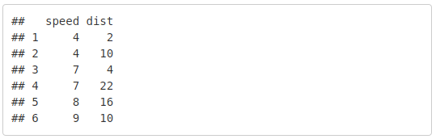
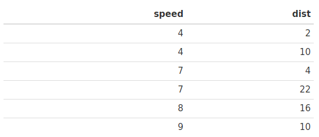
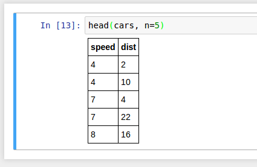

On chunks, cells, beakers and functions: models for data driven content
Recently, I’ve written about breaking up Stencila into several packages that can act as a network of diverse peers . Each of those packages bring its own capabilities to the network, most notably as execution contexts for a one or more languages. We call those execution contexts Sessions (in the past we’ve called them Contexts and I’m thinking that may be a better name to revert to!). They’re analogous to Jupyter’s Kernels , allowing you to execute a snippet of code in your favorite programming language, and then insert the resulting content into your Document or Sheet.
I’ve been implementing several Session classes over the last few weeks. The R package has a RSession for executing R code and a SqliteSession for executing SQL code within an SQLite database. The Python package has a PySession and the Node.js package has a JavascriptSession and a BashSession .
Despite being implemented in different languages, these Session classes share a common API which allow Documents and Sheets to interact with them. The most important method in this API is execute(). It is what takes a snippet of code, executes that code and returns some content. As such the execute() method is a small but critically important part of Stencila as a platform. It’s what put the “data driven” into “data driven content”. So getting it right from the start is crucial.
In this post, I’m going to look at the models for data driven content used in popular tools for reproducible documents, RMarkdown and Jupyter. We’ll then look at how to extend those models to documents that generate content in more than one execution context. I’ll then wrap up with an explanation of the model that I’ve arrived at as being the best fit for Stencila. This discussion is centered around Stencila Documents, but most, if not all, of it applies to Sheets just as much.
Chunks
The model for code execution in
RMarkdown
is code “chunks”. A chunk is a fenced code block with the {r} tag and
options
which control things like output format, code evaluation and caching.
When a chunk is evaluated the content returned is almost exactly the same as what you would get if you typed that code into a R console. For example, if you used the
head
function on the cars dataset,
``` {r}
head(cars)
```
You get something which looks very similar to the output you would get on the R command line as a HTML <pre> element,

To get a nicer looking table you have to use the kable function of the knitr package to generate a Markdown table from the data and then specify the results='asis' option to ensure that Markdown is inserted into the document, ummm, as is,
``` {r, results='asis'}
knitr::kable(head(cars))
```
The Markdown in turn is then converted into a HTML <table> element,

If you used the
plot
function in a chunk,
``` {r}
plot(cars)
```
Then, similarly to as if you entered it in the console, the rendering engine detects that a graphic has been generated and inserts a HTML <img> element:

So, the code chunk model in RMarkdown closely mimics the behavior of the read-evaluate-print-loop of a R console: what gets printed out gets inserted as content into the document.
Cells
The model for code execution in Jupyter Notebooks is “code cells” . Code cells are similar to RMarkdown’s chunks but are represented in JSON:
{
"cell_type" : "code",
"execution_count": 1,
"metadata" : {
"collapsed" : true,
"autoscroll": false,
},
"source" : "[some code]",
"outputs": [{
"output_type": "stream",
...
}],
}
Jupyter’s code cells explicitly allow for different types of content. The output_type can be stream (for standard output and error streams, stdout and stderr) and display_data for “mime-bundles” of data driven content (e.g. text/plain, image/png). The nice thing about that is that if a code cell returns some tabular data then Jupyter automatically converts it to a HTML table so you don’t have to use conversion functions like kable,

So, Jupyter’s code cell model is similar to RMarkdown in that it mimics the read-evaluate-print-loop of a console but extends that with some automagic MIME-based conversion of resulting content.
Beakers
One of the exciting side effects of decoupling Stencila’s architecture is that is allows for polyglot data-driven documents - documents that embed code for more than one language. Why would you want to do that? To use the right tool for the job. For example, you might use SQL to extract some data from a large database, analyze that data using R, and then produce interactive visualizations of the results using D3 in Javascript. There are already ways to glue languages together but polyglot documents potentially provide an easier alternative by stripping away the inter-language scaffolding cruft. That would be beneficial for authors of data-driven documents and for readers wanting to work out how they did the analysis.
Beaker Notebooks
are very similar to Jupyter notebooks except that they are polyplot. A key challenge in creating polyglot notebooks is the transfer of data between languages. Beaker approach this using the model of a laboratory beaker. The beaker is a notebook namespace - a collection of variables and their values that are stored within the notebook. You put data into the beaker using either the set method or a setter (depending upon the language) within a code cell e.g. in R
beaker::set('car_summary', summary(cars))
Then later in the notebook you can take the same data out of the beaker using the get method or a getter e.g. in Python
beaker.car_summary
This transfer of data between languages is done via “autotranslation” of data types including primitives (e.g. integers, floats, booleans, strings) and tabular data (e.g. data frames). It’s an elegant approach that removes the cognitive overhead when trying to work with multiple languages withing one document.
Variables and Functions
In redesigning the API for Stencila Sessions I drew inspiration from these various predecessors. But, I also wanted an execution model that could be extended to another use case: interactive documents. Bret Victor’s “explorable explanations” are great examples. Today many people are using Shiny to create interactive documents in R.
To support interactivity in documents we need to support some specification of dependencies. Shiny allows you to define those dependencies within the R code contained in code chunks. Ideally, we want to be able to define those dependencies across code chunks. That would allow us to have polyglot and distributed, interactive documents.
To allow for dependencies within a document but across code chunks we can use Beaker Notebook’s idea of having a document namespace - a collection of variables i.e. a mapping of names to data values - and automatic conversion of data between languages. Each code chunk can declare which variables it uses as inputs (if any) and which variable it outputs (if any). From those declarations, we can determine the dependencies between code chunks.
With the dependency graph in hand we can then implement reactive documents. This is of course similar to the live, reactive programming of spreadsheets which we have implemented in Stencila sheets . A case of convergent evolution ?
So, what does this actually look like? We’re still working on all of this, and in particular the user interfaces still need a lot of work. So, in lieu of nice screenshots I’m going to show you pieces of HTML. Stencila Documents use HTML as their canonical format. You can author them using a Google Docs-like WYSIWYG interface or using a markup language like Markdown or Latex. You never have to touch HTML. But internally they’re HTML documents and until those other authoring interfaces are more polished, it’s easier to show you what they look like using HTML.
In Stencila Documents the equivalent of a code chunk or code cell is call an “execute directive” and it’s represented in HTML like this,
<pre data-execute="r">
head(cars)
</pre>
That directive gets refreshed by calling the execute method (via a HTTP-JSON API) of an R session: execute("head(cars)"). The execute method returns a language independent representation of the last values in the code. The code head(cars) evaluates to an R data frame and the session automatically converts that to a JSON “data package”:
{
"errors": null,
"output": {
"format": "csv",
"type": "tab",
"value": "speed,dist\n4,2\n4,10\n7,4\n7,22\n8,16\n9,10"
}
}
Note that what we’re doing here is quite different to RMarkdown and Jupyter - instead of returning some representation of the data we’re actually returning the data. In this case, that data will get converted into a HTML representation and inserted into the document,
<pre data-execute="r">
head(cars)
</pre>
<output>
<table>
<thead>
<tr>
<th>speed</th>
<th>dist</th>
</tr>
</thead>
<tbody>
<tr>
<td>4</td>
<td>2</td>
</tr>
...
</tbody>
</table>
</output>
But, instead we could declare the data as an output variable of the execute directive and then use it as an input into another execute directive. Here for example, within a SqliteSession we calculate the total sales by region, assign it to the document variable sales_by_region and then use that data as an input into some R code to plot the data,
<pre data-execute="sqlite('sales-data.db3')" data-output="sales_by_region">
SELECT region, sum(sales) AS total FROM sales GROUP BY region
</pre>
<pre data-execute="r" data-input="sales_by_region">
plot(total~region,data=sales_by_region)
</pre>
<output>
<img src="data:image/png;base64,iVBORw0KG...." />
</output>
As in Beaker Notebooks, there is no need to do any explicit data conversion. But in addition, by moving the declaration of the variable out of the code chunk, the document is able to “know” the dependency between chunks. It knows that if I refresh the first execute directive, or change its SQL code, that the second execute directive in R will also have to be refreshed.
What about user interactivity? We include that idea by using the HTML input tag to define a document variable. When a user changes the input (e.g. entering a new number, or sliding a slider), the document variable is changed, which in turn triggers any execute directive that depend upon that variable. In this example, the document variable breaks is declared as a number. When its value is changed, the R chunk generates a new histogram having the desired number of breaks:
<input name="breaks" type="number" />
<pre data-execute="r" data-input="breaks">
hist(faithful$eruptions, breaks=breaks)
</pre>
<output>
<img src="data:image/png;base64,iVBORw0KG...." />
</output>
This model at is actually very similar to the familiar concepts of variables and functions in most high-level languages. Here, document variables can be declared using <input> elements and execute directives are like function calls optionally taking inputs and returning outputs which can be assigned to a new, or existing variable.
There are some interesting follow-ons from moving to this model. But that’s for another post. As always, comments are much appreciated!